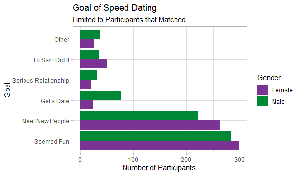
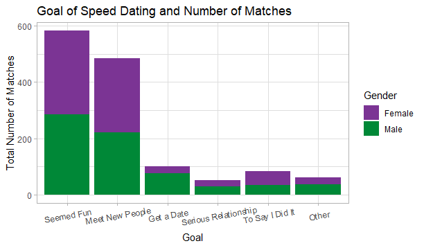
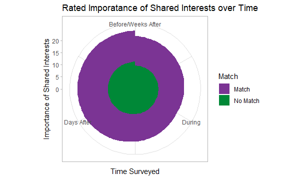

Assignment Five: More On Creating Charts
assignment 5: more on creating charts
Mastery comes through repetition, and this week’s task is to create more charts, specifically a Bar Chart, Column chart, and Circular Area Chart.

Inspired by our last Hackathon, I decided to make these charts using the Happy Planet Index, but by using different colors and formats to give the data more personality visually.
Here is the coding:
> library(tidyverse)
── Attaching packages ─────────────────────────────────────────── tidyverse 1.3.2 ──
✔ ggplot2 3.3.6 ✔ purrr 0.3.4
✔ tibble 3.1.8 ✔ dplyr 1.0.10
✔ tidyr 1.2.1 ✔ stringr 1.4.1
✔ readr 2.1.2 ✔ forcats 0.5.2
── Conflicts ────────────────────────────────────────────── tidyverse_conflicts() ──
✖ dplyr::filter() masks stats::filter()
✖ dplyr::lag() masks stats::lag()
> library(tidyverse)
> data_path <- "speed_dating_data.csv"
> data <- read.csv(data_path)
> summary(data)Which gave us a detailed summary of every point in which explained its minimum, 1st quadrant, median, mean, and 3rd quadrant.
bar chart:
> data_match = data[data$match == 1,] # get all those who matched
>
> data_bar = subset(data_match, select=c(goal, gender))
> data_bar = na.omit(data_bar)
>
> # change variables character type as a categorical variables
> class(data_bar$goal) = "character"
> class(data_bar$gender) = "character"
>
> ggplot(data_bar) +
+ geom_bar(aes(x=goal, fill=gender), position="dodge") +
+ scale_x_discrete(breaks=c(1, 2, 3, 4, 5, 6),
+ labels=c("Seemed Fun", "Meet New People",
+ "Get a Date", "Serious Relationship",
+ "To Say I Did It", "Other")) +
+ scale_fill_discrete(labels=c("Female", "Male"), type=c("#7b3494", "#008837")) +
+ labs(title = "Goal of Speed Dating",
+ subtitle = "Limited to Participants that Matched",
+ fill = "Gender") +
+ xlab("Goal") +
+ ylab("Number of Participants") +
+ theme_light() +
+ theme(text = element_text(family="Avenir")) +
+ coord_flip()
There were 20 warnings (use warnings() to see them)
column chart:
> data_col = subset(data, select=c(goal, match, gender))
> data_col = na.omit(data_col)
>
> # change variables to character type as a categorical variables
> class(data_col$goal) = "character"
> class(data_col$gender) = "character"
>
> ggplot(data_col) +
+ geom_col(aes(x=goal, y=match, fill=gender)) +
+ scale_x_discrete(breaks=c(1, 2, 3, 4, 5, 6),
+ labels=c("Seemed Fun", "Meet New People",
+ "Get a Date", "Serious Relationship",
+ "To Say I Did It", "Other")) +
+ scale_fill_discrete(labels=c("Female", "Male"), type=c("#7b3494", "#008837")) +
+ labs(title = "Goal of Speed Dating and Number of Matches",
+ fill = "Gender") +
+ xlab("Goal") +
+ ylab("Total Number of Matches") +
+ theme_light() +
+ theme(text = element_text(family="Avenir"),
+ axis.text.x = element_text(angle=10, vjust = 0.75))
There were 27 warnings (use warnings() to see them)
circular area chart:
>data_cir = subset(data, select=c(shar1_1, shar1_s, shar7_2, shar1_2, match))
There were 50 or more warnings (use warnings() to see the first 50)
> data_cir = na.omit(data_cir)
>
> data_cir = data.frame(time=c(1, 2, 3, 4,
+ 1, 2, 3, 4)
+ ,match=c(0, 0, 0, 0,
+ 1, 1, 1, 1)
+ ,shar_imp=c(mean(data_cir[!is.na(data_cir$shar1_1) & data_cir$match == 0,]$shar1_1),
+ mean(data_cir[!is.na(data_cir$shar1_s) & data_cir$match == 0,]$shar1_s),
+ mean(data_cir[!is.na(data_cir$shar7_2) & data_cir$match == 0,]$shar7_2),
+ mean(data_cir[!is.na(data_cir$shar1_2) & data_cir$match == 0,]$shar1_2),
+ mean(data_cir[!is.na(data_cir$shar1_1) & data_cir$match == 1,]$shar1_1),
+ mean(data_cir[!is.na(data_cir$shar1_s) & data_cir$match == 1,]$shar1_s),
+ mean(data_cir[!is.na(data_cir$shar7_2) & data_cir$match == 1,]$shar7_2),
+ mean(data_cir[!is.na(data_cir$shar1_2) & data_cir$match == 1,]$shar1_2)))
>
> # change match to character type as a categorical variable
> class(data_cir$match) = "character"
>
> ggplot(data_cir, aes(x=time, y=shar_imp, group=match, fill=match)) +
+ geom_area() +
+ coord_polar() +
+ scale_fill_discrete(labels=c("Match", "No Match"), type=c("#7b3494", "#008837")) +
+ scale_x_continuous(labels=c("Before", "During", "Days After", "Weeks After")) +
+ labs(title = "Rated Imporatance of Shared Interests over Time",
+ fill = "Match") +
+ xlab("Time Surveyed") +
+ ylab("Importance of Shared Interests") +
+ theme_light() +
+ theme(text = element_text(family="Avenir"))
There were 16 warnings (use warnings() to see them)